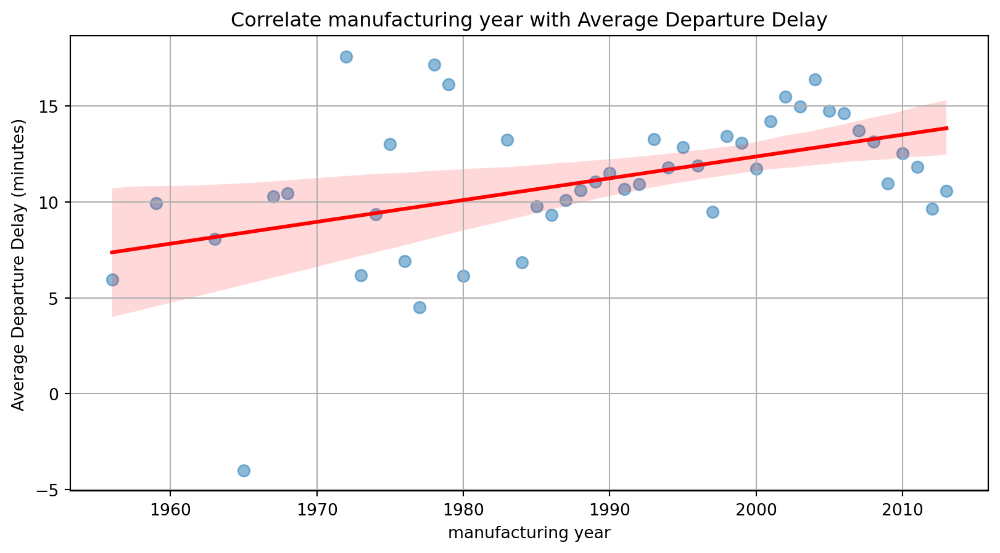

<class 'pandas.core.frame.DataFrame'>
RangeIndex: 336776 entries, 0 to 336775
Data columns (total 27 columns):
# Column Non-Null Count Dtype
--- ------ -------------- -----
0 year_x 336776 non-null int64
1 month 336776 non-null int64
2 day 336776 non-null int64
3 dep_time 328521 non-null float64
4 sched_dep_time 336776 non-null int64
5 dep_delay 328521 non-null float64
6 arr_time 328063 non-null float64
7 sched_arr_time 336776 non-null int64
8 arr_delay 327346 non-null float64
9 carrier 336776 non-null object
10 flight 336776 non-null int64
11 tailnum 334264 non-null object
12 origin 336776 non-null object
13 dest 336776 non-null object
14 air_time 327346 non-null float64
15 distance 336776 non-null int64
16 hour 336776 non-null int64
17 minute 336776 non-null int64
18 time_hour 336776 non-null object
19 year_y 278864 non-null float64
20 type 284170 non-null object
21 manufacturer 284170 non-null object
22 model 284170 non-null object
23 engines 284170 non-null float64
24 seats 284170 non-null float64
25 speed 963 non-null float64
26 engine 284170 non-null object
dtypes: float64(9), int64(9), object(9)
memory usage: 69.4+ MB뉴욕 비행장 데이터 분석
권서연, 김민채, 박재원, 오상원
7조
목차
- 데이터 설명
- 분석 목표
- 항공편 지연 분석
- 시간대별
- 계절별
- 날씨별
- 시간대별
- 항공기 특성 분석
- 엔진 개수에 따른 특수성
- 생산 년도와 엔진 개수
- 엔진 개수에 따른 특수성
데이터셋 정보

flights, planes, weather 중심
데이터 병합
- 다음과 같이 비행장 데이터
flights와planes를 병합한 데이터를 생성합니다.
데이터 병합
- 병합된 데이터인
mer_dat은 다음과 같은 변수들을 가지고 있습니다.
1. 출발 시각에 따른 출발 지연 시간
mer_dat['hour'] = mer_dat['time_hour'].str.extract(r'(\d{2}):').astype(int)
set(mer_dat['hour']) # 6~8시는 출발하지 않는다.
y = mer_dat.groupby('hour')['dep_delay'].mean().dropna() # na값인 5시 데이터 제거
x = y.index.astype(int)
x_reordered = np.concatenate([x[x >= 9], x[x < 9] + 24])
y_reordered = np.concatenate([y[x >= 9], y[x < 9]])
# 9시부터 시작할 수 있도록 정렬
plt.scatter(x_reordered, y_reordered)
plt.xlabel('dep_hour')
plt.ylabel('dep_delay')
plt.title('Correlate dep_hour with dep_delay')
xticks_ordered = list(range(9, 33))
xtick_labels = list(range(9, 24)) + list(range(0, 9))
plt.xticks(xticks_ordered, xtick_labels)
plt.xlim(8, 32)
max_idx = np.argmax(y_reordered)
max_x = x_reordered[max_idx]
max_y = y_reordered[max_idx]
plt.scatter(max_x, max_y, color='red')
plt.show()1. 출발 시각에 따른 출발 지연 시간

- 출발 시각이 0시에 가까워 질수록 출발 지연 시간이 길어짐
2. 계절별 출발 지연 시간
#| echo: true
spring = mer_dat.loc[(mer_dat['month'] >= 3) & (mer_dat['month'] <= 5)]
summer = mer_dat.loc[(mer_dat['month'] >= 6) & (mer_dat['month'] <= 8)]
autumn = mer_dat.loc[(mer_dat['month'] >= 9) & (mer_dat['month'] <= 11)]
winter = mer_dat.loc[(mer_dat['month'] == 12) | (mer_dat['month'] <= 2)]
# 봄: 3~5월, 여름: 6~8월, 가을: 9~11월, 겨울: 12~2월로 설정
seasons = ['spring', 'summer', 'autumn', 'winter']
delays = [spring['dep_delay'].mean(),
summer['dep_delay'].mean(),
autumn['dep_delay'].mean(),
winter['dep_delay'].mean()]
colors = ['#FFB6C1', '#87CEEB', '#D2691E', '#4682B4']
plt.bar(seasons, delays, color = colors)
plt.ylabel('dep_delay')
plt.xlabel("season")
plt.title('Correlate season with dep_delay')
plt.show()2. 계절별 출발 지연 시간

- 여름이 가장 높은 지연 시간을 가지고, 가을이 가장 낮은 지연 시간을 가진다.
2. 계절별 출발 지연 시간

지연이 다수 발생한다.
2. 계절별 출발 지연 시간


상태를 유지하기 힘들다.
2. 계절별 출발 지연 시간

3. 비행기 제작 연도별 출발 지연 시간
#| echo: true
delay_by_year = mer_dat.groupby("year_y")["dep_delay"].mean().reset_index()
plt.figure(figsize=(10, 5))
sns.regplot(
x = delay_by_year["year_y"],
y = delay_by_year["dep_delay"],
line_kws={"color": "red"},
scatter_kws={"s": 50, "alpha": 0.5}
) # 선형 회귀 직선 추가
plt.xlabel('manufacturing year')
plt.ylabel('Average Departure Delay (minutes)')
plt.title('Correlate manufacturing year with Average Departure Delay')
plt.grid(True)3. 비행기 제작 연도별 출발 지연 시간

- 제작 시기가 현재에 가까워질수록 출발 지연 시간이 늘어남
4. 비행기 엔진 종류 별 속도 분석
#| echo: true
mer_dat["air_time_hours"] = mer_dat["air_time"] / 60
mer_dat["speed_mph"] = mer_dat["distance"] / mer_dat["air_time_hours"]
# 시간 단위를 분 단위로 조정 후 속도 계산
engine_speed = mer_dat.groupby("engine")["speed_mph"].mean().reset_index()
plt.figure(figsize=(10, 5))
sns.barplot(x="engine", y="speed_mph", data=engine_speed, palette="coolwarm")
plt.xlabel("Engine Type")
plt.ylabel("Average Speed (mph)") # miles per hour
plt.title("Average Speed by Engine Type")
plt.xticks(rotation=45)
plt.grid(axis="y", linestyle="--", alpha=0.7)
plt.show()4. 비행기 엔진 종류 별 속도 분석